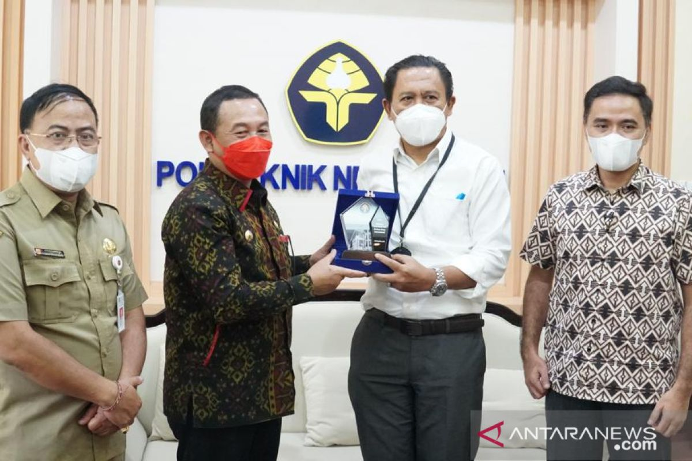

Penyetoran Sampah Di Bank Sampah Politeknik Negeri Bali Hingga 1 ton dalam 1 hari

Dalam sebuah pencapaian luar biasa, Bank Sampah PNB berhasil mencatatkan penyetoran sampah mencapai 1 ton setiap harinya. Hal ini menandai langkah besar dalam upaya keberlanjutan lingkungan dan partisipasi aktif masyarakat dalam mengelola limbah.
Bank Sampah PNB, yang telah lama menjadi pionir dalam gerakan pengelolaan sampah di [Lokasi], terus menginspirasi masyarakat setempat untuk ikut serta dalam upaya pelestarian lingkungan. Dengan mencapai penyetoran sampah sebanyak 1 ton per hari, bank sampah ini berhasil menciptakan dampak positif yang signifikan terhadap lingkungan sekitar.
Manajer Bank Sampah PNB, [Nama Manajer], menyampaikan kebanggaannya terhadap prestasi ini. "Kami sangat bersyukur melihat antusiasme dan kesadaran masyarakat yang semakin meningkat terhadap pentingnya mengelola sampah dengan bijak. Capaian penyetoran 1 ton per hari bukan hanya mencerminkan keberhasilan Bank Sampah PNB, tetapi juga partisipasi luar biasa dari masyarakat dalam menjaga keberlanjutan lingkungan."
Salah satu kontributor terbesar terhadap peningkatan jumlah penyetoran sampah adalah program insentif yang diterapkan oleh Bank Sampah PNB. Masyarakat yang aktif menyetor sampah mendapatkan poin atau hadiah tertentu, menciptakan dorongan tambahan untuk berpartisipasi dalam program pengelolaan sampah.
Peningkatan penyetoran sampah ini juga memberikan dampak positif terhadap keberlanjutan ekonomi masyarakat setempat. Dengan menjual sampah yang telah terkelola dengan baik, Bank Sampah PNB turut mendukung ekonomi lingkungan dan memberdayakan masyarakat secara ekonomi.
Pihak manajemen Bank Sampah PNB berharap bahwa keberhasilan ini dapat menjadi inspirasi bagi bank sampah lainnya di seluruh wilayah. Mereka juga berencana untuk terus mengembangkan program-program inovatif guna meningkatkan partisipasi masyarakat dalam upaya pengelolaan sampah.
Keberhasilan Bank Sampah PNB mencapai penyetoran sampah hingga 1 ton per hari tidak hanya merayakan pencapaian kuantitatif, tetapi juga meresapi semangat kebersamaan masyarakat dalam menjaga keberlanjutan lingkungan demi masa depan yang lebih baik.